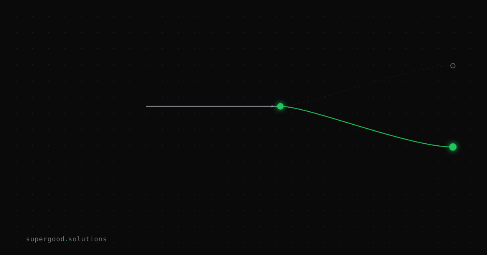

A/B Testing Models in Production Is Not a Benchmark Problem
TL;DR: Teams treat "the new model scored higher on our eval set" as permission to ship it everywhere. It isn't — a benchmark win tells you nothing about how the model behaves on the 5% of live traffic that never looked like your test set.
Key Insight
Swapping models is not an npm bump. When a package updates, the worst case is usually a broken build you catch in CI. When a model updates, the worst case is a silent behavior drift that passes every offline eval and only shows up as a slow bleed in conversion, escalation rate, or hallucination complaints two weeks later — after the "successful" rollout is long forgotten.
The reason: offline benchmarks and golden sets are, by construction, a sample of inputs you already know how to grade. Production traffic is not. A model can outperform its predecessor on your curated 200-example eval set and still regress on the long tail of ambiguous, multi-turn, or adversarial inputs that make up the traffic your eval set was never built to represent. Benchmark parity is necessary. It is nowhere close to sufficient.
Why Teams Miss This
Three patterns show up over and over in postmortems:
- The eval set is stale the moment it's built. It was assembled to validate the last model change, not to anticipate the failure modes of the next one. Nobody re-derives it from recent production traffic before each swap.
- "Better on average" hides "worse on the cases that matter." A model that's 3% better in aggregate can be meaningfully worse on your highest-value segment — enterprise customers, a specific intent class, a compliance-sensitive flow — and aggregate metrics will never surface that until someone complains.
- There's no rollback plan because there was no traffic split. Teams cut over 100% of traffic at once because "the eval passed," which means the first signal of a regression is a support ticket, not a dashboard, and reverting means another full deploy cycle instead of flipping a routing weight.
How to Actually Do It
Treat every model swap like a canary release, not a config change:
- Route, don't replace. Put a router or gateway in front of inference calls so you can split traffic by percentage without a redeploy. Start the new model at 5%.
- Score in production, not just offline. Layer automated evaluators (an LLM-as-judge scoring relevance, faithfulness, and coherence) on top of real traffic, plus a lightweight human-feedback loop for your highest-value segment.
- Segment the comparison. Don't just compare model A vs. model B in aggregate — slice by intent, customer tier, and input length. The regression that matters is almost always in a slice, not the mean.
- Set a rollback trigger before you start, not after. Define the metric and threshold that auto-reverts traffic (e.g., faithfulness score drops more than 2 points, or escalation rate rises more than 10%) so a bad swap self-heals in minutes, not after a Monday morning incident review.
- Hold at each ramp step long enough to see the tail. 48 hours at 5%, then 25%, then 100% — not because the numbers need that long to stabilize, but because your traffic mix does (weekday vs. weekend, business hours vs. off-hours).
# Minimal traffic-split router — the shape, not a library
import random
def route_model(request, new_model_pct=0.05):
if random.random() < new_model_pct:
return call_model("new-model-v2", request)
return call_model("current-model-v1", request)The code is trivial. The discipline of segmented scoring and a pre-committed rollback trigger is the actual work — and it's the part most teams skip.
What We've Learned
If your model-swap process doesn't include a traffic split, a rollback trigger defined before the ramp starts, and a scoring pass on live production data (not just your golden set), you don't have an A/B test — you have a hope. Next experiment: before your next model upgrade, pull last week's actual production traffic, not your eval set, and check whether the new model's aggregate win still holds once you slice it by your top three customer segments.
Sources
- A/B testing framework for prompts and models in production — hypothesis design, LLM-specific metrics (relevance, faithfulness, coherence), and statistical interpretation: traceloop.com/blog/the-definitive-guide-to-a-b-testing-llm-models-in-production
- Traffic-splitting and rollback automation patterns for LLM canary deploys: agentbus.sh/posts/how-to-ab-test-llm-prompts-and-models-in-production
- Enterprise LLM evaluation beyond public benchmarks, including drift detection: knowlee.ai/blog/llm-evaluation-enterprise-guide
Have a specific workflow in mind?
Bring it to a Quick Scan — a live working session where we'll tell you honestly whether it should be an agent, a workflow, or left alone, before you spend a dollar building it. You get 3 prioritized recommendations on the call, a one-page summary after, and the $500 credited toward any engagement within 30 days.
Get new posts + practical agent-ops notes
One email when something new goes up. No nurture sequence, no spam — unsubscribe whenever you want.